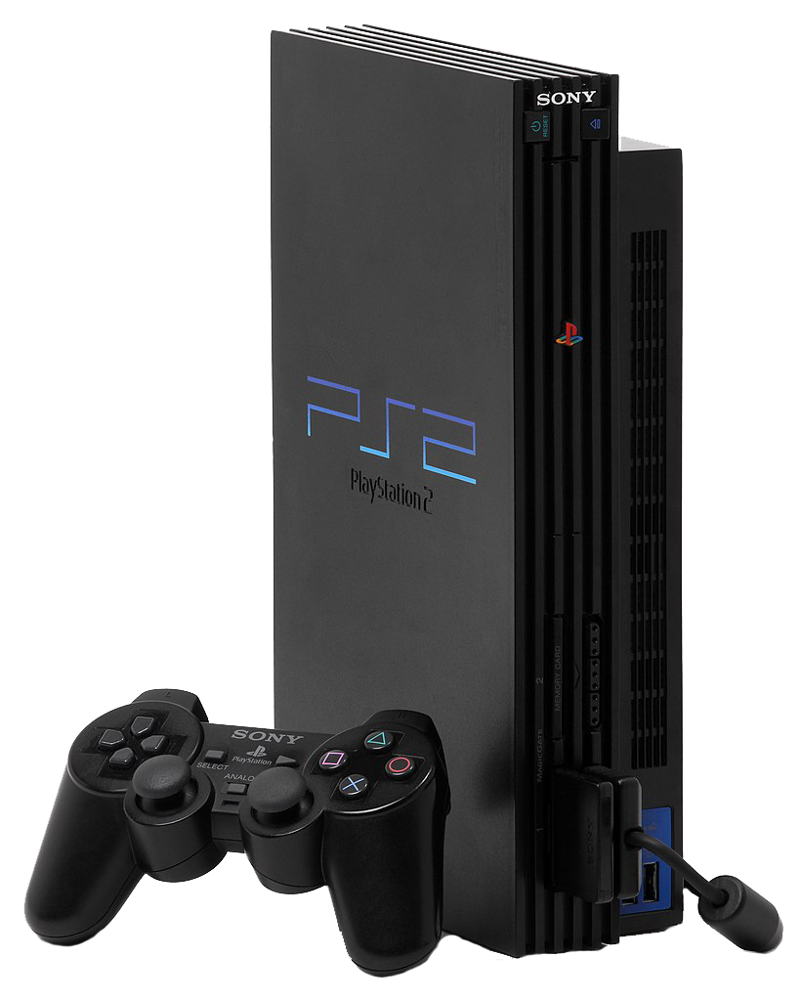

PlayStation 2
R$300
O PlayStation 2 (oficialmente abreviado como PS2) é um console de jogos eletrônicos produzido pela Sony Computer Entertainment (SCE). Foi lançado no dia 4 de março de 2000 no Japão, no dia 26 de outubro na América do Norte, e posteriormente, no dia 24 de novembro na Europa. É o sucessor do PlayStation original. O PlayStation 2 é um console de sexta geração, que competiu com o Dreamcast da Sega, o GameCube da Nintendo e o Xbox da Microsoft.